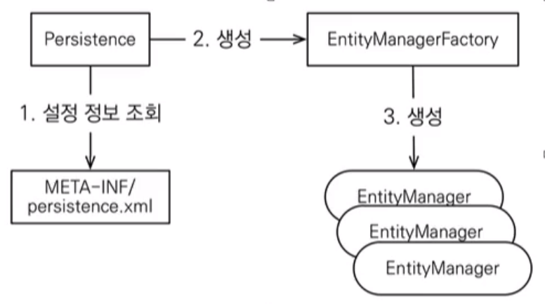

EntityManagerFactory(이하 emf) 로부터 EntityManager(이하 em) 를 획득하여 사용
사용한 emf, em 는 close()로 반환해야 함

em.getTransaction()으로 트랜잭션 객체 획득 후 begin()으로 트랜잭션 시작
commit() 또는 rollback()으로 트랜잭션을 종료해야 함
!주의
@Entity 애노테이션으로 JPA가 관리할 객체임을 명시@Id 애노테이션으로 해당 필드를 DB의 PK와 매핑@Table, @Column 등의 애노테이션은 객체의 필드명과 DB의 컬럼명이 다를 경우 name 엘리먼트로 명시
em.createQuery() 파라미터로 jpql을 작성해 SQL을 수행할 수 있음